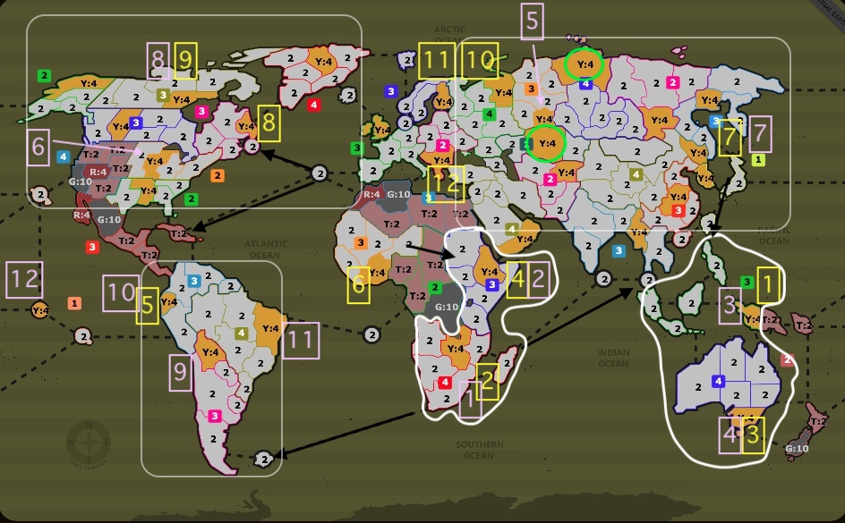
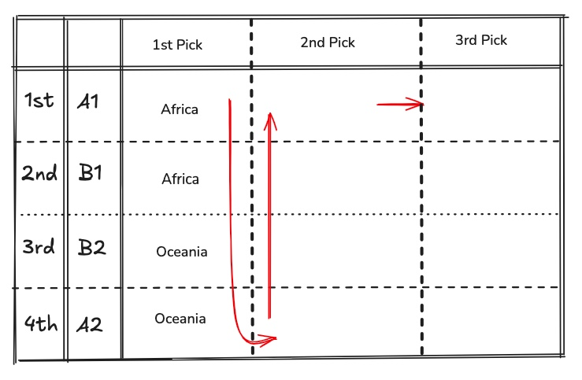
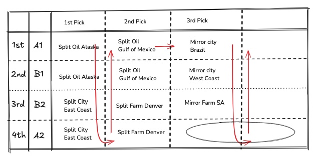
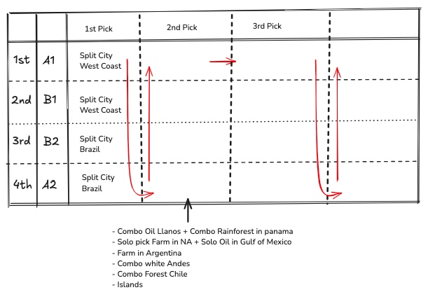
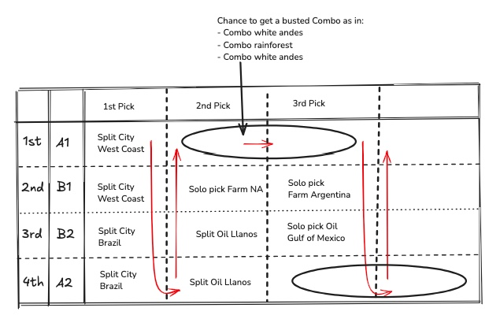
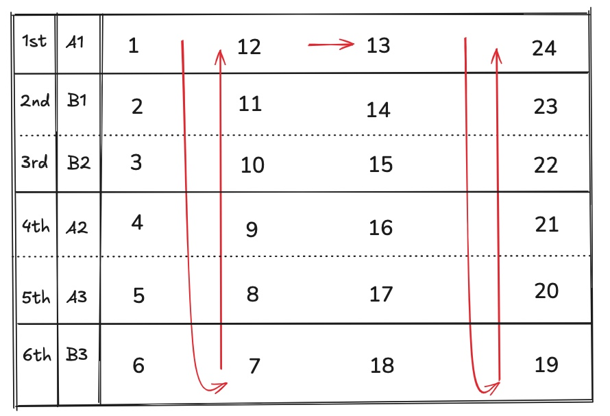

Picking Phase
Picking in Team Games
2vs2: Mirroring
In a Game between 2 teams, A and B, with each team having x number of players and each player receiving y number of territories, the total number of territories allocated to all players participating is 2xy. As such, during pick phase, you should always make enough picks up to the number 2xy, as you might end up losing enough picks to reach that number.
There is a core idea behind picking in Team Games, that holds true to every Team Game, regardless of the amount of players participating, and that is mirror picking. Suppose that in a 2vs2 template, there as an undisputed best territory/bonus in the board and you want for your team (team A for the example's sake) to maximize the chances that you get that. If team B mirror picks (meaning both B1 and B2 put their first pick on that territory), whereas team A has only A1 first pick it, then Team A has 25% probability to get first pick. Therefore, if there is a territory you want to make sure your team gets, mirroring first pick is the way. Expanding this idea to a quantifiable 2vs2 template where team A can confidently order the territories in distribution in a ranking of preference, has given birth to the idea that is "full mirroring".
By full mirroring, we refer to teams that would mirror pick their entire set of picks. For example, in Final Earth 2vs2 (commonly referred as Strat 2vs2) where each player receives 3 initial territories, full mirroring refers to making a ranking of 12 territories in the map and mirror picking the entire list. If a team full mirrors 1->12 in Final Earth 2vs2 and doesn't lose a single pick during pick phase, they get their first 6 territories, meaning player A1 receives 1,4,5 while A2 receives 2,3,6. If the team loses for example picks 3 and 4, then suddenly the distribution looks like A1: 1,6,7 and A2: 2,5,8 and the allocation looks completely different. This introduces us to the biggest drawback in mirror picking, that is ensuring coverage in the map for all possible scenarios of pick combinations for both players. Take a close look for example at this CW 2vs2 game. Team A full mirrors and receives their 1,3,4,6,7,8 allocated as:
- Aika: 1,6,7
- No.One: 3,4,8
After Turn 1 we quickly see that Aika has 3 contested picks. In expansion-heavy 2vs2 templates that might not be a big issue, as long as No.One could expand while Aika absorbs pressure, but 3 fronts vs 2 opponents at Turn 2 is impossible to overcome.
The argument in favor of mirroring (not necessarily full mirroring), is reducing the degrees of freedom or variance during picking phase. For example, take a look at this Ladder 2vs2 game, accompanied by the figure below. In the figure, I have denoted:
- With G10 the 5 wastelands as well as with T2 the neutrals in the bonuses containing wastelands and R4 the in distribution spawns that belong to wastelanded bonuses.
- With Y4 the pickable territories in distribution.
- With white regions the 5 income zones. Thick white lines for the 2 safest income regions, Africa and Oceania, with the other 3 for NA, SA and Eurasia.
- With Yellow Team A's picks.
- With Pink Team B's picks.
- With Black arrows the fastest paths into the safe regions.
- With Bright Green 2 important territories in Eurasia.

First things first we can spot that both teams decide on covering the 2 safest income regions at picks 1-4 with the reasons being:
- If we successfully get our first 4 picks, with our last 2 picks as a team we cover 2/3 of the large income regions within 1-3 turns. The paths should be obvious:
- Indonesia -> Japan -> Cover East Asia
- Oceania -> Hawaii -> Cover USA
- South Africa -> Argentina -> Cover SA
- East Africa -> Europe into West Russia
- If we get 3 out of our first 4 picks, this means we have secured 1 safe income region and opt to get coverage in the other 3.
- If we split both safe income regions (expected result), we have to optimize accordingly the later picks.

But what does it mean to optimize later picks? Under those premises, player A2 will get a territory, followed by team A getting 2 consecutive territories. So, if I am making picks and expecting my opponents to go for the same 1-5 territories, if I cover a region only with my 5th pick, I risk a 50-50% chance of losing that territory. If I want to take that risk I must optimize my 6/7, as I will be guaranteed to get them.
With that settled, my pickset now makes more sense.
- For my picks (7ate9): I select 5th in Ural based on:
- It's 3 double borders are all 4army neutrals that I either see Turn 1 or Turn 2 -> is relatively safely
- It is in the center of the biggest income region on the map, eurasia.
- Has immediate expansion if needed.
- Is a +3 bonus. Since I expect early contact and splitting 1-4, it's generally better to go for safe +3 bonuses instead of +4, as +4s require 10/10 of your deployments in the first 2 turns.
- If I lose Ural, I always get 6/7, which ensures for me coverage on NA and a backup safe +3 bonus in eurasia, Fast East Russia. The latter is especially useful for having direct paths to Oceania and NA.
- If I lose 6 in NA I either get two picks from 1-4, 5,7,8 and a last one, or I am getting two from 1-4, 5,7,9 and 1 more. Notice that it is impossible to lose all 6,7,8 under this scenario of splitting 1-4. As such,
- If I get two from 1-4, 5, 7, 8 and a last one, 8 is my coverage for NA and with the remaining picks i can stack cover the last income region.
- If I get two from 1-4, 5,7,9 I should be team A, have lost 6,8 but have Far East Russia to cover NA if needed + position my 10 in SA in the spawn closest to NA, while 12 also can positionally cover that.
2vs2: Not Mirroring
As some wise people have said, full mirroring is a lazy way to pick. Let's take a look at two games, with the first one this Biomes 2vs2 game.

Upon looking at the distribution there are 3 combos that can either net income turn 1 or +3/+4 income on turn 2 with 0 deployments, followed by the more niche but equally strong combo in Gulf of Mexico. Due to the other good picks being relatively slow, with the exception of the city in Brazil which can be covered in multiple ways, let's accept that the best course of action is split picking the 4 combos from 1-4 in both players. After that, Team A has a guaranteed pick on player A1, followed by two picks for team B followed by two picks on player A2.
The key in this distribution is recognizing that there are 3 territories worth mirroring at 5-7, in two cities and the farm in SA (look Rufus' team picks). If he loses the city in Brazil, he guarantees 6,7 which provide the last city as well as the farm in Argentina. Even more importantly, 8/9 should be split picks, since if you are team A, you want to capitalize on the fact that A2 will get two picks consecutively and you want to aim at them getting initial income.
In another example, again at Biomes 2vs2:

There are in the distribution two undisputed busted city combos that both teams should split pick 1-2 otherwise they are completely trolling. But after that we have a problem, as there are so many different combos and individual territories that we would like to cover. Experienced players should agree that the combo in Llanos (oil) as well as the solo Farm pick in NA are the best of the rest, as we can make multiple picks around Argentina and the whites in the surrounding region to ensure coverage. If we proceed on split picking after 1-2 and have one player do 3 in Farm in NA and 4 onward somewhere in Argentina while the other player does 3/4 in the oil in Llanos, then there is a hidden trap, that I try to exploit with my pickset.
- If the 3/4 Oil player is A1 and team B mirror picks 3-5 (2x Oil and Farm), then A2 gets solo Farm and team B get both Oil picks and can gift Turn 1 to get the bonus. Therefore there is 25% chance that a team not mirroring 3-5 can lose that combo entirely.
Proceeding on the same path, there are more issues arising, as shown in the next figure.

As long as both teams in some way or another split all picks from 1-7, player A1 is about to get a combo, with 2 consecutive picks. So, the correct approach after the combo oil & farm in NA, is to split pick between the two players of the team for the combos in either the rain-forest, or forest, or whites, so as to ensure that if you are team A, you get a really good combo on A1. Then, the only compensation that team B can get, since B1 and B2 get a pick each, and not a combo in one of them, is the Farm in Argentina as well as the Oil in Gulf of Mexico, followed by a combo pick for player A2.
Understanding all the intricacies of ABBA will give you the upper hand and a better and thorough understanding of the picking phase.
3vs3
Mirroring, either fully or partially is extremely common in non-INSS 3vs3 templates, as it drastically reduces the number of variables while at the same time optimizing the probabilities of certain cover or combo picks. For example, one can go into analysing in detail this CL 3vs3 game, while taking into account the pick allocation order during the game. Analyzing a 3vs3 Europe game is an exhausting and complicated task, in which I will not delve into at the moment.

Structuring Picks
All of the important principles are very clearly written in M'Hunters Warlight Strategy Guide (Alternative link), something I suggest revisiting. I will not delve too deep into different picksets here, as this is case specific for each template and distribution, but rather use this to just comment on how to structure picks properly given a strategy and knowing your ABBA.
In the previous section when you saw the table you surely must be wondering why know all this. In reality, you do not need to memorize the combinations (sometimes), it is but a guideline for what you can expect. Take for example templates with 3 initial territories. We sometimes see in the distribution an FTB or a big income region and think to ourselves I will do 3/4/5/6 in that area, or 3/4/5 to counter that area and 6th somewhere else. The fault in this logic comes with assuming that we will always get our 1/2 and have our 3rd pick as a counter pick. If we lose one of our first 2 picks, then we suddenly find ourselves with a cluster at 3/4/5. In other words, sometimes we should deviate from the 1/2 safe 3/4/5 counter logic to a 1/2/3 safe 4/5/6 counter logic, with 1/2 combo and 3 safe, or gamble 1 safe 2/3 combo, or completely disregard both ideas and go for more versatile picks. Examples of this backfiring in 1v1 Ladder, Slow Burn, Strat ME.
Depending on the distribution in the game we can formulate picks based on what we expect to get or lose. For example in this Malvia game, the yellow +4 west as a first pick controls two FTBs. Besides that, there is immediate expansion to every direction while also controlling the south +5 and +4 with the neutral double borders within 1 move. At the same time, north east provides fast income in 2 ways, the no deploy +2 combo and the ftb +3 in the islands. If the two players A and B split 1-4, then player A will get 5 and 8, while B gets two consecutive at 6,7. What this means effectively, is that the plan of: combo 1-2, then combo 3-4, then cover a region with 5-6-7-8, risks a pickset like 1,4,5,6 with two picks in the region you wanted to cover last. Meanwhile, your opponent could in theory have 2,3, a safe pick somewhere else, and a last pick neighboring your 5,6. Therefore, for each combo you expect to split, you can push cover picks later on your pickset.
Another important idea during picks is knowing how to ensure coverage, or should I rephrase, setup your picks in a specific way so that you reduce the variance while picking. Ask yourself this question: In a 4 initial territory template like Malvia, are there any scenarios where I can lose 4 consecutive picks? What about 3 consecutive picks? What if I want to cover a region with my 3/4/5, is it ever possible losing that triple combination? Same goes for something like 4/5/6, or 5/6/7. The answers lie in the table below.
| n Consecutive | Combination | Picking Phase | Consecutive Missing |
|---|---|---|---|
| 4 | [1, 2, 3, 8] |
first | {4, 5, 6, 7} |
| 3 | [1, 2, 3, 7] |
first, second | {4, 5, 6} |
| 3 | [1, 2, 4, 8] |
first | {5, 6, 7} |
| 3 | [1, 3, 4, 8] |
first | {5, 6, 7} |
| 3 | [1, 2, 6, 7] |
second | {3, 4, 5} |
| 2 | [1, 4, 5, 6] |
first | {2, 3} |
| 2 | [1, 4, 5, 7] |
first | {2, 3} |
| 2 | [1, 4, 5, 8] |
first | {2, 3} |
| 2 | [1, 2, 5, 6] |
first, second | {3, 4} |
| 2 | [1, 2, 5, 7] |
first, second | {3, 4} |
| 2 | [1, 2, 5, 8] |
first | {3, 4} |
| 2 | [1, 2, 3, 6] |
first, second | {4, 5} |
| 2 | [2, 3, 6, 7] |
second | {4, 5} |
| 2 | [1, 3, 6, 7] |
second | {4, 5} |
| 2 | [1, 2, 4, 7] |
first, second | {5, 6} |
| 2 | [1, 3, 4, 7] |
first, second | {5, 6} |
| 2 | [2, 3, 4, 7] |
second | {5, 6} |
| 2 | [1, 2, 5, 8] |
first | {6, 7} |
| 2 | [1, 3, 5, 8] |
first | {6, 7} |
| 2 | [1, 4, 5, 8] |
first | {6, 7} |
There are a lot of takeaways from this, but the simplest ones are:
- Covering an area or an FTB with 3/4/5 and losing all three guarantees a 1/2/6/7 with known move order.
- Covering an area or an FTB with 5/6/7 and losing all three, gives intel on move order and one of the combinations in the table, unless you received 1/2/3/4, which can happen whether you picked first or second.
- Expanding on that, you can lose 3/4/5 (get 1/2/6/7), you can lose 2/4/5 (get 1/3/6/7) and you can lose 1/4/5 (get 2/3/6/7). So if you can afford losing that sequence you control the outcome. If you can't afford losing all three because it is an FTB or a region you deem worthy of stacking, the latest you can guarantee coverage is at 2/3/5 (impossible to lose all three). You can lose 2/3/6 by getting first pick and a combination of 1/4/5 and a last pick on 7 or 8. If you think of picks by imagining the ABBA table these should make sense.
- Losing 2/3 translates to getting 1/4/5 and knowing move order.
- Losing 3/4 translates to getting 1/2/5 100% of the time. This does mean that you can use 5 to immediately counter 3/4, however you can position 5 somewhere that will counter the expansion from 3/4 while having a positional advantage.
- Losing 4/5 means you guarantee 3/6 (you get 1/2/3/6, 1/3/6/7 or 2/3/6/7).
Some players actively think about these things. Some others have an amazing intuition and it comes to them naturally. Some others tend to forget and write things down, like me. Let's look fast at some games purely to evaluate the picks based on possible combinations, starting with this Guiroma game.
- The 2/3/4 combination around Illyricum, the most efficient bonus on the map, guarantees coverage, as it is impossible to lose 2/3/4 as well as 2/3/5. Choosing to do 4 Illy instead of 5 comes simply from wanting to get that triple pick, as it is dominating.
- 3 in Asia instead of Illyricum as losing 1, guarantees 2/3, and 3 is the latest of the two, providing coverage in the whole Turkey income region. 2 can be completed by the end of t1.
- Consider adrenaline's 1/2/3/4 only. At worst he gets only two of the four picks. There are two paths moving on with picks from here. One of them revolves doing 5 in a safe bonus, then 6/7/8 in an income region. The other revolves around doing 5/6 in one region and 7/8 in another region. The first, involves the 50-50% risk of losing coverage. The latter involves the possibility of getting 5/6 vs a situation where your opponent gets a safe pick and a counter to your 5/6. This dilemma is something that depends on your comfort as well as the distribution give to you.
- If you scout completed games by the best players in the website, you will see a trend where the 5/6 and 7/8 style is preferred. To me, the answer lies in the size of the map and the number of areas you deem worthy of ensuring coverage. after 1-4 there is only one region left, it might be worth it going for 5 safe into 6/7/8 cover, planning to get 1/4/5/8 or 2/3/6/7. If there's multiple regions, then 5/6 into 7/8 eliminates the coinflip of whether i get my choice of safe 5 or not.
Ultimately, remember that every scenario is unique and every set can be countered the weirdest blind counter in existence.
It becomes increasingly fruitless to construct a matrix similar to the previous one for more than 5 Initial Territory maps, as the pick combinations are way too many. Nevertheless, maybe this table is useful to you.
| n Consecutive | Combination | Picking Phase | Consecutive Missing |
|---|---|---|---|
| 5 | [1, 2, 3, 4, 10] |
second | {5, 6, 7, 8, 9} |
| 4 | [1, 2, 3, 8, 9] |
first | {4, 5, 6, 7} |
| 4 | [1, 2, 3, 4, 9] |
first, second | {5, 6, 7, 8} |
| 4 | [1, 2, 3, 5, 10] |
second | {6, 7, 8, 9} |
| 4 | [1, 2, 4, 5, 10] |
second | {6, 7, 8, 9} |
| 4 | [1, 3, 4, 5, 10] |
second | {6, 7, 8, 9} |
| 4 | [2, 3, 4, 5, 10] |
second | {6, 7, 8, 9} |
| 3 | [1, 2, 3, 6, 10] |
second | {7, 8, 9} |
| 3 | [1, 2, 4, 6, 10] |
second | {7, 8, 9} |
| 3 | [1, 2, 5, 6, 10] |
second | {7, 8, 9} |
| 3 | [1, 3, 4, 6, 10] |
second | {7, 8, 9} |
| 3 | [1, 3, 5, 6, 10] |
second | {7, 8, 9} |
| 3 | [2, 3, 4, 6, 10] |
second | {7, 8, 9} |
| 3 | [2, 3, 5, 6, 10] |
second | {7, 8, 9} |
| 3 | [1, 2, 3, 5, 9] |
first, second | {6, 7, 8} |
| 3 | [1, 2, 4, 5, 9] |
first, second | {6, 7, 8} |
| 3 | [1, 3, 4, 5, 9] |
first, second | {6, 7, 8} |
| 3 | [2, 3, 4, 5, 9] |
second | {6, 7, 8} |
| 3 | [1, 2, 3, 4, 8] |
first, second | {5, 6, 7} |
| 3 | [1, 2, 4, 8, 9] |
first | {5, 6, 7} |
| 3 | [1, 3, 4, 8, 9] |
first | {5, 6, 7} |
| 3 | [1, 2, 3, 7, 8] |
first, second | {4, 5, 6} |
| 3 | [1, 2, 3, 7, 9] |
first, second | {4, 5, 6} |
| 3 | [1, 2, 3, 7, 10] |
second | {4, 5, 6} |
| 3 | [1, 2, 6, 7, 8] |
second | {3, 4, 5} |
| 3 | [1, 2, 6, 7, 9] |
second | {3, 4, 5} |
| 3 | [1, 2, 6, 7, 10] |
second | {3, 4, 5} |
| 2 | [1, 2, 3, 7, 10] |
second | {8, 9} |
| 2 | [1, 2, 4, 7, 10] | second | {8, 9} |
| 2 | [1, 2, 5, 7, 10] | second | {8, 9} |
| 2 | [1, 2, 6, 7, 10] | second | {8, 9} |
| 2 | [1, 3, 4, 7, 10] | second | {8, 9} |
| 2 | [1, 3, 5, 7, 10] | second | {8, 9} |
| 2 | [1, 3, 6, 7, 10] | second | {8, 9} |
| 2 | [2, 3, 4, 7, 10] | second | {8, 9} |
| 2 | [2, 3, 5, 7, 10] | second | {8, 9} |
| 2 | [2, 3, 6, 7, 10] | second | {8, 9} |
| 2 | [1, 2, 3, 6, 9] |
first, second | {7, 8} |
| 2 | [1, 2, 4, 6, 9] | first, second | {7, 8} |
| 2 | [1, 2, 5, 6, 9] | first, second | {7, 8} |
| 2 | [1, 3, 4, 6, 9] | first, second | {7, 8} |
| 2 | [1, 3, 5, 6, 9] | first, second | {7, 8} |
| 2 | [1, 4, 5, 6, 9] | first | {7, 8} |
| 2 | [2, 3, 4, 6, 9] | second | {7, 8} |
| 2 | [2, 3, 5, 6, 9] | second | {7, 8} |
| 2 | [1, 2, 3, 5, 8] |
first, second | {6, 7} |
| 2 | [1, 2, 4, 5, 8] | first, second | {6, 7} |
| 2 | [1, 2, 5, 8, 9] | first | {6, 7} |
| 2 | [1, 3, 4, 5, 8] | first, second | {6, 7} |
| 2 | [1, 3, 5, 8, 9] | first | {6, 7} |
| 2 | [1, 4, 5, 8, 9] | first | {6, 7} |
| 2 | [2, 3, 4, 5, 8] | second | {6, 7} |
| 2 | [1, 2, 3, 4, 7] |
first, second | {5, 6} |
| 2 | [1, 2, 4, 7, 8] | first, second | {5, 6} |
| 2 | [1, 2, 4, 7, 9] | first, second | {5, 6} |
| 2 | [1, 3, 4, 7, 8] | first, second | {5, 6} |
| 2 | [1, 3, 4, 7, 9] | first, second | {5, 6} |
| 2 | [1, 2, 4, 7, 10] | second | {5, 6} |
| 2 | [1, 3, 4, 7, 10] | second | {5, 6} |
| 2 | [2, 3, 4, 7, 8] | second | {5, 6} |
| 2 | [2, 3, 4, 7, 9] | second | {5, 6} |
| 2 | [2, 3, 4, 7, 10] | second | {5, 6} |
| 2 | [1, 2, 3, 6, 7] |
first, second | {4, 5} |
| 2 | [1, 2, 3, 6, 8] | first, second | {4, 5} |
| 2 | [1, 2, 3, 6, 9] | first, second | {4, 5} |
| 2 | [1, 2, 3, 6, 10] | second | {4, 5} |
| 2 | [1, 3, 6, 7, 8] | second | {4, 5} |
| 2 | [1, 3, 6, 7, 9] | second | {4, 5} |
| 2 | [1, 3, 6, 7, 10] | second | {4, 5} |
| 2 | [2, 3, 6, 7, 8] | second | {4, 5} |
| 2 | [2, 3, 6, 7, 9] | second | {4, 5} |
| 2 | [2, 3, 6, 7, 10] | second | {4, 5} |
Some links I need for specific templates later: